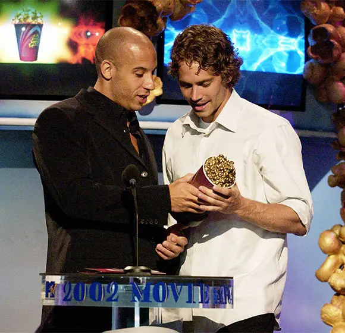
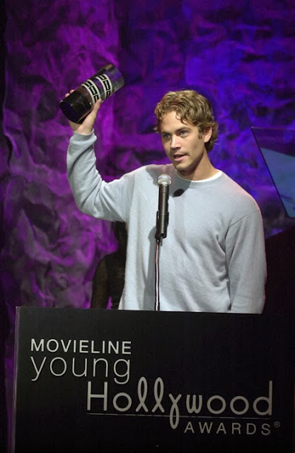

Curiosidades
Curiosidades Inspiración real → La película se basó en un artículo de revista (“Racer X”, de Vibe Magazine) sobre carreras callejeras ilegales en Nueva York.
Paul Walker piloto → Paul Walker (Brian O’Conner) ya era fanático de los autos antes de la película y se involucró en entrenamientos de conducción real.
Vin Diesel casi no vuelve → Al inicio solo firmó para la primera entrega. Universal luego tuvo que convencerlo de regresar en cameos y secuelas.
Autos icónicos → El Toyota Supra naranja de Brian y el Dodge Charger negro de Toretto se convirtieron en leyendas de la cultura automovilística.
Títulos alternativos → En algunos países, la peli se estrenó con otros nombres, por ejemplo en España fue “A todo gas”.
Cameos de extras reales → En las escenas de carreras aparecen miembros reales de clubes de autos de Los Ángeles.
Secuencia del tren → Fue una de las más difíciles de grabar, mezclando tomas reales con miniaturas y dobles de riesgo.
Premios
MTV Movie Awards (2002)
Ganó: Mejor pareja en pantalla (Paul Walker y Vin Diesel).Nominaciones: Mejor película y Mejor secuencia de acción.ALMA Awards (2002)
Nominación: Michelle Rodríguez (Mejor Actriz en cine).Imagen Foundation Awards (2002)
Nominación: Michelle Rodríguez (Mejor Actriz).World Stunt Awards (2002)Nominación: Mejor secuencia de conducción por las persecuciones de autos.
Más allá de premios formales, el verdadero logro fue crear una franquicia que hoy vale miles de millones de dólares y sigue vigente después de más de 20 años


A 12 años del accidente automovilístico que terminó con la vida de Paul Walker, el actor de la saga Rápido y Furioso
El 30 de noviembre de 2013, en Santa Clarita, California el actor subía a un Porsche rojo con su socio. Cuál era su mayor adicción, cómo fue su último día y cuáles fueron sus últimas palabras.Es una tarde cálida, el sol cae oblicuo contra el asfalto. Había gente paseando. Un auto pasa a toda velocidad. El motor rumoroso sobresalta a algún niño. Es rojo. Un Porsche que parece levitar. En la curva se pone de costado, derrapa, pretende quedar siempre paralelo al cordón. Algo falla. Demasiada velocidad, demasiada confianza. Un estruendo, como si la tierra se estuviera abriendo por dentro. El auto pega contra un árbol. Otro estruendo, seco y violento. El auto sigue sin control y pega con un poste de luz de concreto. Da un giro de 180 grados. Un último estruendo. Termina el dominó fatal, el auto impacta contra otro árbol y la inercia se detiene. Después, el silencio. Que parece más profundo, más sagrado después del ruido atronador y sorpresivo, y al suponer el destino irreversible de los pasajeros del Porsche. Nadie habla, nadie pudo siquiera gritar del horror. Como un susurro empieza a crecer otro sonido. Primero leve, luego más fuerte. Es el crepitar de las llamas que están fagocitando los restos del vehículo y a sus dos tripulantes. El humo negro crea una bruma pesada, ominosa.